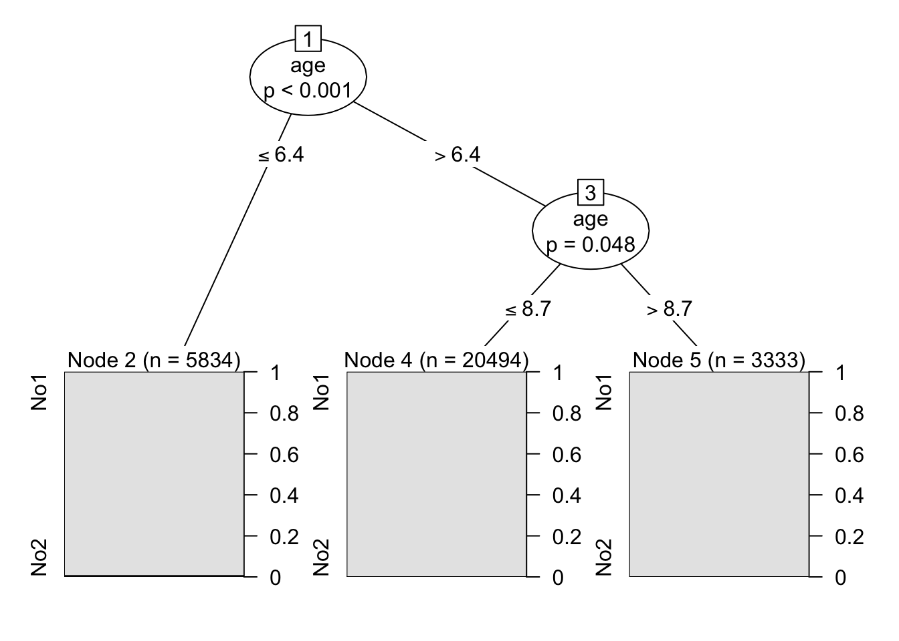
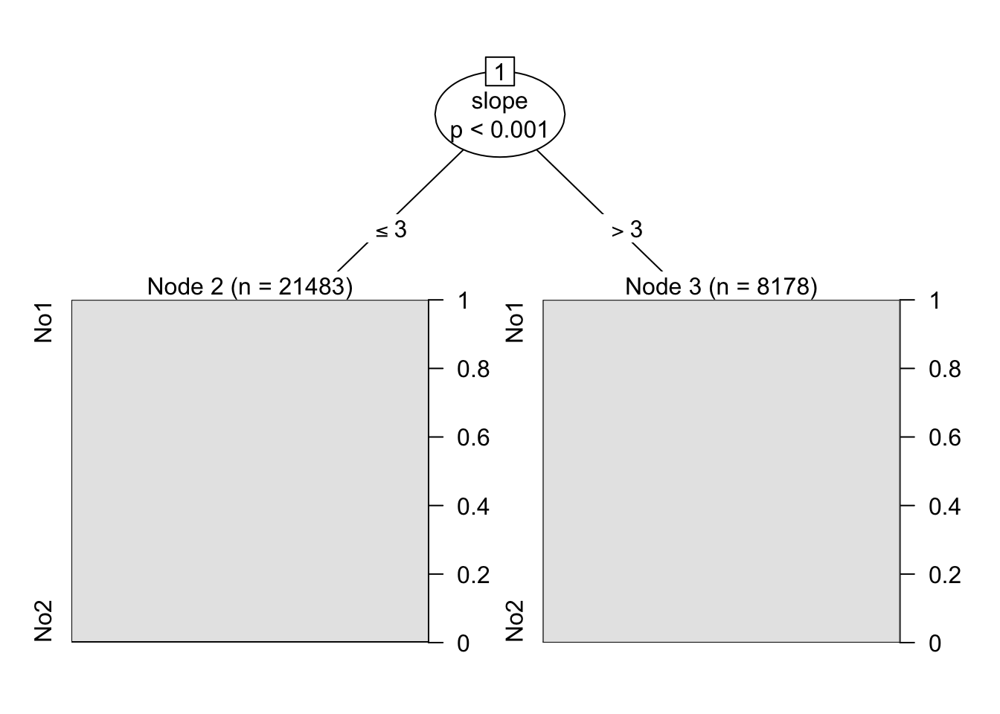
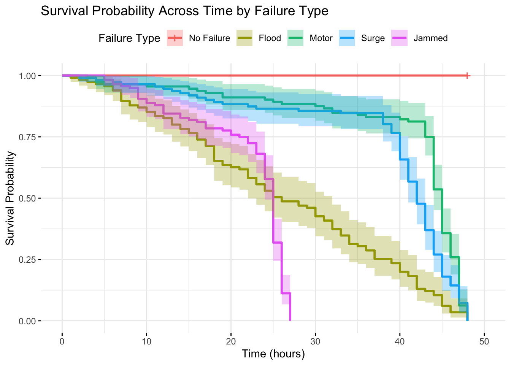
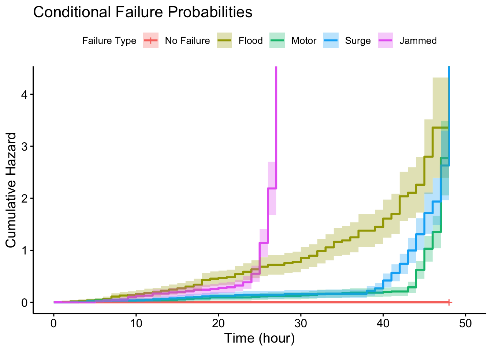

Chapter 2 Setup to Make Model
2.1 Initial Variable Screening
#hurricane <- hurricane[,-(9:56)]
#hurricane <- hurricane %>% dplyr::select(-survive,-reason2,-trashrack)
# Backward stepping
full.model <- coxph(Surv(censor, reason == 2) ~ backup + age + bridgecrane + servo + gear + slope + elevation, data = hurricane)
empty.model <- coxph(Surv(censor, reason == 2) ~ 1, data = hurricane)
back.model <- step(full.model,
scope = list(lower = empty.model,
upper = full.model),
direction = 'backward', k = qchisq(0.03, 1, lower.tail=FALSE),trace = F)
#
summary(back.model) ## 3 vars. Age, servo slope## Call:
## coxph(formula = Surv(censor, reason == 2) ~ age + servo + slope,
## data = hurricane)
##
## n= 770, number of events= 112
##
## coef exp(coef) se(coef) z Pr(>|z|)
## age -1.51920 0.21889 0.17075 -8.897 < 2e-16 ***
## servo 0.44075 1.55387 0.20412 2.159 0.0308 *
## slope -0.29120 0.74736 0.06677 -4.361 1.29e-05 ***
## ---
## Signif. codes: 0 '***' 0.001 '**' 0.01 '*' 0.05 '.' 0.1 ' ' 1
##
## exp(coef) exp(-coef) lower .95 upper .95
## age 0.2189 4.5686 0.1566 0.3059
## servo 1.5539 0.6436 1.0415 2.3182
## slope 0.7474 1.3380 0.6557 0.8519
##
## Concordance= 0.786 (se = 0.024 )
## Likelihood ratio test= 132.9 on 3 df, p=<2e-16
## Wald test = 97.26 on 3 df, p=<2e-16
## Score (logrank) test = 94.6 on 3 df, p=<2e-16 Age and slope not linear, adjust them accordingly.
Age and slope not linear, adjust them accordingly.2.3 Time Dependency Assumption
## Binning
hurricane <- hurricane %>%
mutate(agebin = case_when(age<7~0, age<9~1, age>=9~2)) %>%
mutate(slopebin = case_when(slope<=3~0, slope<=5~1, slope>=10~2))
coxModel <- coxph(Surv(censor,reason == 2) ~ servo + factor(slopebin) + factor(agebin), data = hurricane)## Warning in coxph.fit(X, Y, istrat, offset, init, control, weights = weights, : Loglik converged
## before variable 3,5 ; coefficient may be infinite.## chisq df p
## servo 0.279 1 0.60
## factor(slopebin) 3.360 2 0.19
## factor(agebin) 0.429 2 0.81
## GLOBAL 3.857 5 0.57 Slope is definitely time dependent. Need to do tt(slope) in the hurricaneLong Model.
Slope is definitely time dependent. Need to do tt(slope) in the hurricaneLong Model.
## New names:
## Rows: 29661 Columns: 17
## ── Column specification
## ──────────────────────────────────────────────────────────────────────── Delimiter: "," dbl
## (17): ...1, id, backup, age, bridgecrane, servo, gear, trashrack, slope, elevation, surv...
## ℹ Use `spec()` to retrieve the full column specification for this data. ℹ Specify the column
## types or set `show_col_types = FALSE` to quiet this message.
## • `` -> `...1`## # A tibble: 29,661 × 17
## ...1 id backup age bridgecrane servo gear trashrack slope elevation survive censor
## <dbl> <dbl> <dbl> <dbl> <dbl> <dbl> <dbl> <dbl> <dbl> <dbl> <dbl> <dbl>
## 1 1 1 0 6 0 0 0 1 3 2 1 48
## 2 2 1 0 6 0 0 0 1 3 2 1 48
## 3 3 1 0 6 0 0 0 1 3 2 1 48
## 4 4 1 0 6 0 0 0 1 3 2 1 48
## 5 5 1 0 6 0 0 0 1 3 2 1 48
## 6 6 1 0 6 0 0 0 1 3 2 1 48
## 7 7 1 0 6 0 0 0 1 3 2 1 48
## 8 8 1 0 6 0 0 0 1 3 2 1 48
## 9 9 1 0 6 0 0 0 1 3 2 1 48
## 10 10 1 0 6 0 0 0 1 3 2 1 48
## # ℹ 29,651 more rows
## # ℹ 5 more variables: reason <dbl>, reason2 <dbl>, hour <dbl>, pumpOn <dbl>, consecHour <dbl>hurr_long <- hurr_long %>%
mutate(agebin = case_when(age<6.4~0, age<8.7~1, age>=8.7~2)) %>%
mutate(slopebin = case_when(slope<3~0, slope>=3~1))
hurr_long <- hurr_long %>% dplyr::rename(stop = hour)## # A tibble: 29,661 × 20
## ...1 id backup age bridgecrane servo gear trashrack slope elevation survive censor
## <dbl> <dbl> <dbl> <dbl> <dbl> <dbl> <dbl> <dbl> <dbl> <dbl> <dbl> <dbl>
## 1 1 1 0 6 0 0 0 1 3 2 1 48
## 2 2 1 0 6 0 0 0 1 3 2 1 48
## 3 3 1 0 6 0 0 0 1 3 2 1 48
## 4 4 1 0 6 0 0 0 1 3 2 1 48
## 5 5 1 0 6 0 0 0 1 3 2 1 48
## 6 6 1 0 6 0 0 0 1 3 2 1 48
## 7 7 1 0 6 0 0 0 1 3 2 1 48
## 8 8 1 0 6 0 0 0 1 3 2 1 48
## 9 9 1 0 6 0 0 0 1 3 2 1 48
## 10 10 1 0 6 0 0 0 1 3 2 1 48
## # ℹ 29,651 more rows
## # ℹ 8 more variables: reason <dbl>, reason2 <dbl>, stop <dbl>, pumpOn <dbl>, consecHour <dbl>,
## # agebin <dbl>, slopebin <dbl>, start <dbl>mod2 = coxph(formula = Surv(start, stop, reason == 2) ~ factor(agebin) + factor(servo) + factor(slopebin) + factor(consecHour), data = hurr_long)
summary(mod2)## Call:
## coxph(formula = Surv(start, stop, reason == 2) ~ factor(agebin) +
## factor(servo) + factor(slopebin) + factor(consecHour), data = hurr_long)
##
## n= 29661, number of events= 112
##
## coef exp(coef) se(coef) z Pr(>|z|)
## factor(agebin)1 -2.25868 0.10449 0.20035 -11.274 < 2e-16 ***
## factor(agebin)2 -3.82652 0.02179 0.72557 -5.274 1.34e-07 ***
## factor(servo)1 0.30565 1.35751 0.20792 1.470 0.141558
## factor(slopebin)1 -0.90564 0.40428 0.24239 -3.736 0.000187 ***
## factor(consecHour)1 0.11996 1.12745 0.20596 0.582 0.560278
## ---
## Signif. codes: 0 '***' 0.001 '**' 0.01 '*' 0.05 '.' 0.1 ' ' 1
##
## exp(coef) exp(-coef) lower .95 upper .95
## factor(agebin)1 0.10449 9.5705 0.070556 0.15474
## factor(agebin)2 0.02179 45.9024 0.005255 0.09032
## factor(servo)1 1.35751 0.7366 0.903145 2.04045
## factor(slopebin)1 0.40428 2.4735 0.251401 0.65014
## factor(consecHour)1 1.12745 0.8870 0.752982 1.68814
##
## Concordance= 0.793 (se = 0.024 )
## Likelihood ratio test= 146.5 on 5 df, p=<2e-16
## Wald test = 151.6 on 5 df, p=<2e-16
## Score (logrank) test = 221.1 on 5 df, p=<2e-16## [1] 1224.119## factor(agebin)1 factor(agebin)2 factor(servo)1 factor(slopebin)1
## -89.55120 -97.82146 35.75070 -59.57157
## factor(consecHour)1
## 12.74469## factor(agebin)1 factor(agebin)2 factor(servo)1 factor(slopebin)1
## 9.5704783 45.9023676 0.7366445 2.4735067
## factor(consecHour)1
## 0.8869597## Analysis of Deviance Table (Type II tests)
## LR Chisq Df Pr(>Chisq)
## factor(agebin) 131.472 2 < 2.2e-16 ***
## factor(servo) 2.191 1 0.1389
## factor(slopebin) 16.305 1 5.392e-05 ***
## factor(consecHour) 0.337 1 0.5613
## ---
## Signif. codes: 0 '***' 0.001 '**' 0.01 '*' 0.05 '.' 0.1 ' ' 1library(party)
library(partykit)
hurr_long$y<-ifelse(hurr_long$reason==2,1,0)
hurr_long$y<-ordered(hurr_long$y,levels=c(0,1),labels="No","Yes")
model1<-ctree(y~age,data=hurr_long)
model1##
## Model formula:
## y ~ age
##
## Fitted party:
## [1] root
## | [2] age <= 6.4: No1 (n = 5834, err = 1.1%)
## | [3] age > 6.4
## | | [4] age <= 8.7: No1 (n = 20494, err = 0.2%)
## | | [5] age > 8.7: No1 (n = 3333, err = 0.0%)
##
## Number of inner nodes: 2
## Number of terminal nodes: 3
hurr_long$y<-ifelse(hurr_long$reason==2,1,0)
hurr_long$y<-ordered(hurr_long$y,levels=c(0,1),labels="No","Yes")
model1<-ctree(y~slope,data=hurr_long)
model1##
## Model formula:
## y ~ slope
##
## Fitted party:
## [1] root
## | [2] slope <= 3: No1 (n = 21483, err = 0.5%)
## | [3] slope > 3: No1 (n = 8178, err = 0.1%)
##
## Number of inner nodes: 1
## Number of terminal nodes: 2
## [1] TRUE
## attr(,"x-amz-id-2")
## [1] "mXPUol41LJfWZcoT9KDSShHI+jUVUBrkZ0ncPWgcAigtgYefERFgd6tuJJ33Kab0Tcqpy39EsRp7IAvrf0f3dXfL38rqlTuCuIprlCbtHRU="
## attr(,"x-amz-request-id")
## [1] "3NZGJ6G56E887GFP"
## attr(,"date")
## [1] "Fri, 10 Jan 2025 18:58:13 GMT"
## attr(,"x-amz-bucket-region")
## [1] "us-east-1"
## attr(,"x-amz-access-point-alias")
## [1] "false"
## attr(,"content-type")
## [1] "application/xml"
## attr(,"transfer-encoding")
## [1] "chunked"
## attr(,"server")
## [1] "AmazonS3"files <- get_bucket_df(
bucket = "s3://survival2024/",
region = "us-east-1",
max = 20000
) %>%
as_tibble()
#Downloading files
save_object(
object = "hurricane.csv", #Change
bucket = "s3://survival2024/",
region = "us-east-1",
file = "hurricane" #Change
)## [1] "hurricane"#You can now start Wrangling the data...
hurricane <- read.csv("hurricane") #Change
hurricane = hurricane %>% dplyr::mutate(Index = row_number())- Give the percentage of pumps within each failure type and percentage of pumps that did not fail.
##
## 0 1 2 3 4
## 316 115 112 111 116# Total number of pumps
total_pumps <- sum(reason_counts)
# Calculate percentages for each failure type
reason_percentages <- (reason_counts / total_pumps) * 100
reason_percentages##
## 0 1 2 3 4
## 41.03896 14.93506 14.54545 14.41558 15.06494No failure: 41.03% Reason 1: 14.94% Reason 2: 14.55% Reason 3: 14.42% Reason 4: 15.06%
- Give the average time until failure for each failure type. Are means a good measure for length of survival? Discuss why or why not.
# Calculate mean failure time for each failure type
average_failure_time <- aggregate(hurricane$hour, by = list(hurricane$reason), FUN = mean, na.rm = TRUE)
# Rename columns for clarity
colnames(average_failure_time) <- c("Failure_Type", "Average_Time_Until_Failure")
# Print the results
average_failure_time## Failure_Type Average_Time_Until_Failure
## 1 0 48.00000
## 2 1 26.44348
## 3 2 41.04464
## 4 3 38.82883
## 5 4 21.93966Reason 1: 26.44 hr Reason 2: 41.04 hr Reason 3: 38.83 hr Reason 4: 21.94 hr Means are not a good measure of length of survival because censored values included in the mean can impact the mean survival time. Median is a better measure.
- Create and upload the survival probability across time for pumps broken down by failure type overlaid into one graph.
# Assuming the SURVIVE variable is coded as 1 for failed and 0 for not failed
surv_object <- Surv(time = hurricane$hour, event = hurricane$survive == 0)
# Fit the Kaplan-Meier survival model, stratified by failure type (REASON)
km_fit <- survfit(surv_object ~ hurricane$reason, data = hurricane)
# Plot survival curves with ggplot2 styling for readability
surv_plot <- ggsurvplot(
km_fit,
data = hurricane,
conf.int = TRUE,
legend.title = "Failure Type",
legend.labs = c("No Failure", "Flood", "Motor", "Surge", "Jammed"),
xlab = "Time (hours)",
ylab = "Survival Probability",
title = "Survival Probability Across Time by Failure Type",
ggtheme = theme_minimal()
)
surv_plot
- Create and upload the graph of conditional failure probabilities across time for pumps broken down by failure type overlaid into one graph.
km_fit <- survfit(surv_object ~ hurricane$reason, data = hurricane)
h = km_fit$n.event/km_fit$n.risk
index.h=rep(0,length=(max(hurricane$hour)+1)) #Need to add 0
index.h[(km_fit$time)+1]=h #Because of 0
haz.plot=data.frame(cbind(seq(0,max(hurricane$hour)), index.h))
colnames(haz.plot)=c("Time","Hazard")
ggplot(haz.plot,aes(x=Time,y=Hazard))+geom_line()
ggsurvplot(km_fit, data = hurricane, fun = "cumhaz", conf.int = TRUE, xlab = "Time (hour)", ylab = "Cumulative Hazard", title = "Conditional Failure Probabilities", legend.title = "Failure Type",
legend.labs = c("No Failure", "Flood", "Motor", "Surge", "Jammed"))
surv_object <- Surv(time = filter(hurricane, reason==1)$hour, event = filter(hurricane, reason==1)$survive == 0)
km_fit <- survfit(surv_object ~ 1, data = filter(hurricane, reason==1))
h1 = km_fit$n.event/km_fit$n.risk
index.h1=rep(0,length=(max(hurricane$hour)+1)) #Need to add 0
index.h1[(km_fit$time)+1]=h1 #Because of 0
haz.plot1=data.frame(cbind(seq(0,max(hurricane$hour)), index.h1))
haz.plot1$Reason1 = 1
surv_object <- Surv(time = filter(hurricane, reason==2)$hour, event = filter(hurricane, reason==2)$survive == 0)
km_fit <- survfit(surv_object ~ 1, data = filter(hurricane, reason==2))
h2 = km_fit$n.event/km_fit$n.risk
index.h2=rep(0,length=(max(hurricane$hour)+1)) #Need to add 0
index.h2[(km_fit$time)+1]=h2 #Because of 0
haz.plot2=data.frame(cbind(seq(0,max(hurricane$hour)), index.h2))
haz.plot2$Reason2 = 2
surv_object <- Surv(time = filter(hurricane, reason==3)$hour, event = filter(hurricane, reason==3)$survive == 0)
km_fit <- survfit(surv_object ~ 1, data = filter(hurricane, reason==3))
h3 = km_fit$n.event/km_fit$n.risk
index.h3=rep(0,length=(max(hurricane$hour)+1)) #Need to add 0
index.h3[(km_fit$time)+1]=h3 #Because of 0
haz.plot3=data.frame(cbind(seq(0,max(hurricane$hour)), index.h3))
haz.plot3$Reason3 = 3
surv_object <- Surv(time = filter(hurricane, reason==4)$hour, event = filter(hurricane, reason==4)$survive == 0)
km_fit <- survfit(surv_object ~ 1, data = filter(hurricane, reason==4))
h4 = km_fit$n.event/km_fit$n.risk
index.h4=rep(0,length=(max(hurricane$hour)+1)) #Need to add 0
index.h4[(km_fit$time)+1]=h4 #Because of 0
haz.plot4=data.frame(cbind(seq(0,max(hurricane$hour)), index.h4))
haz.plot4$Reason4 = 4
haz.plot.all = cbind(haz.plot1, haz.plot2, haz.plot3, haz.plot4)ggplot(haz.plot.all2, aes(x=V1)) +
geom_line(aes(y = index.h1, color='Flood')) +
geom_line(aes(y = index.h2, color='Motor')) +
geom_line(aes(y = index.h3, color = 'Surge')) +
geom_line(aes(y = index.h4, color= 'Jammed')) +
labs(
title = "Hazard Rates by Failure Type",
x = "Hours",
y = "Hazard",
color = "Failure Type"
) + scale_color_manual(
values = c('Flood' = 'blue', 'Motor' = 'red', 'Surge' = 'orange', 'Jammed' = 'green'),
labels = c("Flood", "Motor", "Surge", "Jammed")) +
theme_minimal() +
scale_x_continuous(breaks = seq(0, 48, by = 6))
- Provide a statistical test to see if the major types of failure have similar survival probabilities across time (include null and alternative hypotheses, test statistic, p-value and conclusion).
# Log-Rank Test
surv_object <- Surv(time = hurricane$hour, event = hurricane$survive == 0)
survdiff(surv_object ~ hurricane$reason, data=hurricane,rho=0)## Call:
## survdiff(formula = surv_object ~ hurricane$reason, data = hurricane,
## rho = 0)
##
## N Observed Expected (O-E)^2/E (O-E)^2/V
## hurricane$reason=0 316 0 275.1 275.1 797.8
## hurricane$reason=1 115 115 32.2 213.5 242.4
## hurricane$reason=2 112 112 68.0 28.4 35.1
## hurricane$reason=3 111 111 55.6 55.2 66.0
## hurricane$reason=4 116 116 23.1 373.8 435.3
##
## Chisq= 1120 on 4 degrees of freedom, p= <2e-16Log-Rank Test:
H0: No significant difference in survival probabilities.
Ha: Significant difference in survival probabilities.
Test statistic: 1120 on 4 degrees of freedom
p-value: <2e-16
Conclusion: Reject the null -> There is a significant difference in survival probabilities over time across failure types.
Homework 2:
hurr.aft.w <- flexsurvreg(Surv(hour, flood) ~ backup + age + bridgecrane + servo + gear + trashrack + slope + elevation, data = hurricane, dist = "weibull")
plot(hurr.aft.w, type = "cumhaz", ci = TRUE, conf.int = FALSE, las = 1, bty = "n",
xlab = "week", ylab = "Cumulative Hazard", main = "Weibull Distribution")hurr.aft.e <- flexsurvreg(Surv(hour, flood) ~ backup + age + bridgecrane + servo + gear + trashrack + slope + elevation, data = hurricane, dist = "exp")
plot(hurr.aft.e, type = "cumhaz", ci = TRUE, conf.int = FALSE, las = 1, bty = "n",
xlab = "week", ylab = "Cumulative Hazard", main = "Exponential Distribution")hurr.aft.g <- flexsurvreg(Surv(hour, flood) ~ backup + age + bridgecrane + servo + gear + trashrack + slope + elevation, data = hurricane, dist = "gamma")
plot(hurr.aft.g, type = "cumhaz", ci = TRUE, conf.int = FALSE, las = 1, bty = "n",
xlab = "week", ylab = "Cumulative Hazard", main = "Gamma Distribution")hurr.aft.ll <- flexsurvreg(Surv(hour, flood) ~ backup + age + bridgecrane + servo + gear + trashrack + slope + elevation, data = hurricane, dist = "llogis")
plot(hurr.aft.ll, type = "cumhaz", ci = TRUE, conf.int = FALSE, las = 1, bty = "n",
xlab = "week", ylab = "Cumulative Hazard", main = "Log-Logistic Distribution")hurr.aft.ln <- flexsurvreg(Surv(hour, flood) ~ backup + age + bridgecrane + servo + gear + trashrack + slope + elevation, data = hurricane, dist = "lognormal")
plot(hurr.aft.ln, type = "cumhaz", ci = TRUE, conf.int = FALSE, las = 1, bty = "n",
xlab = "week", ylab = "Cumulative Hazard", main = "Log-Normal Distribution")
# Goodness-of-Fit Tests
like.e = flexsurvreg(Surv(hour, flood) ~ backup + age + bridgecrane + servo + gear + trashrack + slope + elevation, data = hurricane, dist = "exp")$loglik
like.w <- flexsurvreg(Surv(hour, flood) ~ backup + age + bridgecrane + servo + gear + trashrack + slope + elevation, data = hurricane, dist = "weibull")$loglik
like.ln <- flexsurvreg(Surv(hour, flood) ~ backup + age + bridgecrane + servo + gear + trashrack + slope + elevation, data = hurricane, dist = "lnorm")$loglik
like.g = flexsurvreg(Surv(hour, flood) ~ backup + age + bridgecrane + servo + gear + trashrack + slope + elevation, data = hurricane, dist = "gamma")$loglik
like.ll = flexsurvreg(Surv(hour, flood) ~ backup + age + bridgecrane + servo + gear + trashrack + slope + elevation, data = hurricane, dist = "llogis")$loglik
like.f = flexsurvreg(Surv(hour, flood) ~ backup + age + bridgecrane + servo + gear + trashrack + slope + elevation, data = hurricane, dist = "genf")$loglik
pval.e.g = pchisq((-2*(like.e-like.g)), 2,lower.tail=F)
pval.w.g = pchisq((-2*(like.w-like.g)), 1,lower.tail=F)
pval.ln.g = pchisq((-2*(like.ln-like.g)), 1,lower.tail=F)
##pval.g.f = pchisq((-2*(like.g-like.f)), 1,lower.tail=F)
Tests = c('Exp vs. Gam', 'Wei vs. Gam', 'LogN vs. Gam')
P_values = c(pval.e.g, pval.w.g, pval.ln.g)
cbind(Tests, P_values)## Tests P_values
## [1,] "Exp vs. Gam" "1.15756879954454e-05"
## [2,] "Wei vs. Gam" "1"
## [3,] "LogN vs. Gam" "0.0113749320431249"No difference between Weibull and Gam -> use Weibull
#Variable Selection
full.model <- survreg(Surv(hour, flood) ~ backup + age + bridgecrane + servo + gear + trashrack + slope + elevation, data = hurricane, dist = "weibull")
empty.model <- survreg(Surv(hour, flood) ~ 1, data = hurricane, dist = "weibull")
back.model <- step(full.model,
scope = list(lower = empty.model,
upper = full.model),
direction = 'backward', k = qchisq(0.03, 1, lower.tail=FALSE))## Start: AIC=1496.55
## Surv(hour, flood) ~ backup + age + bridgecrane + servo + gear +
## trashrack + slope + elevation
##
## Df AIC
## - elevation 1 1492.3
## - age 1 1492.4
## - bridgecrane 1 1492.8
## - gear 1 1494.8
## - servo 1 1495.6
## - trashrack 1 1495.8
## - backup 1 1495.9
## <none> 1496.5
## - slope 1 1502.5
##
## Step: AIC=1492.31
## Surv(hour, flood) ~ backup + age + bridgecrane + servo + gear +
## trashrack + slope
##
## Df AIC
## - age 1 1488.1
## - bridgecrane 1 1488.5
## - gear 1 1490.5
## - trashrack 1 1491.7
## - servo 1 1491.7
## - backup 1 1491.8
## <none> 1492.3
## - slope 1 1499.2
##
## Step: AIC=1488.11
## Surv(hour, flood) ~ backup + bridgecrane + servo + gear + trashrack +
## slope
##
## Df AIC
## - bridgecrane 1 1484.2
## - gear 1 1486.5
## - trashrack 1 1487.3
## - backup 1 1488.1
## <none> 1488.1
## - servo 1 1488.9
## - slope 1 1495.0
##
## Step: AIC=1484.21
## Surv(hour, flood) ~ backup + servo + gear + trashrack + slope
##
## Df AIC
## - gear 1 1483.0
## - trashrack 1 1483.5
## - backup 1 1483.9
## <none> 1484.2
## - servo 1 1485.2
## - slope 1 1490.9
##
## Step: AIC=1482.97
## Surv(hour, flood) ~ backup + servo + trashrack + slope
##
## Df AIC
## - trashrack 1 1481.9
## - backup 1 1482.5
## <none> 1483.0
## - servo 1 1487.7
## - slope 1 1488.9
##
## Step: AIC=1481.88
## Surv(hour, flood) ~ backup + servo + slope
##
## Df AIC
## <none> 1481.9
## - backup 1 1482.2
## - servo 1 1486.4
## - slope 1 1487.8hurr.aft = survreg(Surv(hour, flood) ~ backup + servo + slope, data = hurricane, dist = "weibull")
summary(hurr.aft)##
## Call:
## survreg(formula = Surv(hour, flood) ~ backup + servo + slope,
## data = hurricane, dist = "weibull")
## Value Std. Error z p
## (Intercept) 4.7711 0.1524 31.31 < 2e-16
## backup 0.2710 0.1236 2.19 0.02831
## servo 0.3859 0.1306 2.95 0.00313
## slope -0.0606 0.0174 -3.47 0.00051
## Log(scale) -0.4381 0.0860 -5.10 3.5e-07
##
## Scale= 0.645
##
## Weibull distribution
## Loglik(model)= -729.2 Loglik(intercept only)= -744.8
## Chisq= 31.21 on 3 degrees of freedom, p= 7.7e-07
## Number of Newton-Raphson Iterations: 7
## n= 770survprob.75.50.25 = predict(hurr.aft, type = "quantile", se.fit = TRUE,p = c(0.25, 0.5, 0.75))
head(survprob.75.50.25$fit)## [,1] [,2] [,3]
## [1,] 44.05062 77.69575 121.52050
## [2,] 34.56747 60.96954 95.35976
## [3,] 44.05062 77.69575 121.52050
## [4,] 54.36369 95.88577 149.97070
## [5,] 64.79470 114.28381 178.74628
## [6,] 69.27767 122.19080 191.11324## (Intercept) backup servo slope
## 117.05233813 0.31122730 0.47091467 -0.05880652hurricane = hurricane %>% dplyr::mutate(pump = row_number())
#Servo impact
survprob.actual = 1 - psurvreg(hurricane$hour,
mean = predict(hurr.aft, type = "lp"),
scale = hurr.aft$scale, distribution = hurr.aft$dist)
new_time = qsurvreg(1 - survprob.actual,
mean = predict(hurr.aft, type = "lp") +
coef(hurr.aft)['servo'],
scale = hurr.aft$scale,
distribution = hurr.aft$dist)
hurricane$new_time = new_time
hurricane$diff = hurricane$new_time - hurricane$hour
impact.servo=data.frame(hurricane$hour, hurricane$new_time, hurricane$diff, hurricane$flood, hurricane$servo, hurricane$pump)
colnames(impact.servo)=c("O.hour","N.hour","Diff_servo","flood","servo", "pump")
impact.servo=subset(impact.servo,flood==1 & servo==0)
impact.servo %>% arrange(desc(Diff_servo)) %>% filter(O.hour <48 & N.hour >48)## O.hour N.hour Diff_servo flood servo pump
## 1 45 66.19116 21.19116 1 0 375
## 2 44 64.72025 20.72025 1 0 339
## 3 43 63.24933 20.24933 1 0 357
## 4 42 61.77842 19.77842 1 0 331
## 5 42 61.77842 19.77842 1 0 366
## 6 42 61.77842 19.77842 1 0 370
## 7 42 61.77842 19.77842 1 0 394
## 8 40 58.83659 18.83659 1 0 342
## 9 40 58.83659 18.83659 1 0 380
## 10 37 54.42384 17.42384 1 0 317
## 11 37 54.42384 17.42384 1 0 358
## 12 36 52.95293 16.95293 1 0 419
## 13 35 51.48201 16.48201 1 0 364
## 14 34 50.01110 16.01110 1 0 417
## 15 33 48.54018 15.54018 1 0 318
## 16 33 48.54018 15.54018 1 0 397
## 17 33 48.54018 15.54018 1 0 343## O.hour N.hour Diff_servo flood servo pump
## 1 33 48.54018 15.54018 1 0 318
## 2 33 48.54018 15.54018 1 0 397
## 3 33 48.54018 15.54018 1 0 343
## 4 32 47.06927 15.06927 1 0 329
## 5 32 47.06927 15.06927 1 0 347
## 6 31 45.59835 14.59835 1 0 350
## 7 31 45.59835 14.59835 1 0 410
## 8 30 44.12744 14.12744 1 0 352
## 9 30 44.12744 14.12744 1 0 367
## 10 30 44.12744 14.12744 1 0 369
## 11 30 44.12744 14.12744 1 0 376
## 12 28 41.18561 13.18561 1 0 319
## 13 26 38.24378 12.24378 1 0 321
## 14 25 36.77287 11.77287 1 0 404
## 15 25 36.77287 11.77287 1 0 408
## 16 24 35.30195 11.30195 1 0 399
## 17 23 33.83104 10.83104 1 0 377
## 18 23 33.83104 10.83104 1 0 403#Backup impact
survprob.actual = 1 - psurvreg(hurricane$hour,
mean = predict(hurr.aft, type = "lp"),
scale = hurr.aft$scale, distribution = hurr.aft$dist)
head(survprob.actual, n = 10)## [1] 0.7199136 0.6197293 0.7199136 0.7888291 0.8346742 0.8496614 0.7414375 0.6468896 0.7615909
## [10] 0.7414375new_time = qsurvreg(1 - survprob.actual,
mean = predict(hurr.aft, type = "lp") +
coef(hurr.aft)['backup'],
scale = hurr.aft$scale,
distribution = hurr.aft$dist)
hurricane$new_time = new_time
hurricane$diff = hurricane$new_time - hurricane$hour
impact.backup=data.frame(hurricane$hour, hurricane$new_time, hurricane$diff, hurricane$flood, hurricane$backup, hurricane$pump)
colnames(impact.backup)=c("O.hour","N.hour","Diff_backup","flood","backup", "pump")
impact.backup=subset(impact.backup,flood==1 & backup==0)
impact.backup %>% arrange(desc(Diff_backup)) %>% filter(N.hour >48)## O.hour N.hour Diff_backup flood backup pump
## 1 48 62.93891 14.93891 1 0 361
## 2 48 62.93891 14.93891 1 0 389
## 3 48 62.93891 14.93891 1 0 392
## 4 48 62.93891 14.93891 1 0 426
## 5 46 60.31646 14.31646 1 0 373
## 6 45 59.00523 14.00523 1 0 387
## 7 45 59.00523 14.00523 1 0 423
## 8 44 57.69400 13.69400 1 0 339
## 9 43 56.38277 13.38277 1 0 357
## 10 42 55.07155 13.07155 1 0 366
## 11 42 55.07155 13.07155 1 0 370
## 12 41 53.76032 12.76032 1 0 345
## 13 41 53.76032 12.76032 1 0 349
## 14 40 52.44909 12.44909 1 0 337
## 15 40 52.44909 12.44909 1 0 342
## 16 40 52.44909 12.44909 1 0 372
## 17 40 52.44909 12.44909 1 0 380
## 18 37 48.51541 11.51541 1 0 317
## 19 37 48.51541 11.51541 1 0 324
## 20 37 48.51541 11.51541 1 0 333testing2 = impact.backup %>% arrange(desc(Diff_backup)) %>% filter(N.hour < 49 & N.hour >33)
testing2## O.hour N.hour Diff_backup flood backup pump
## 1 37 48.51541 11.515410 1 0 317
## 2 37 48.51541 11.515410 1 0 324
## 3 37 48.51541 11.515410 1 0 333
## 4 36 47.20418 11.204183 1 0 395
## 5 35 45.89296 10.892955 1 0 364
## 6 34 44.58173 10.581728 1 0 322
## 7 34 44.58173 10.581728 1 0 427
## 8 32 41.95927 9.959274 1 0 325
## 9 30 39.33682 9.336819 1 0 367
## 10 30 39.33682 9.336819 1 0 369
## 11 30 39.33682 9.336819 1 0 376
## 12 29 38.02559 9.025592 1 0 359
## 13 28 36.71436 8.714364 1 0 319
## 14 26 34.09191 8.091910 1 0 321
## 15 26 34.09191 8.091910 1 0 374list1 <- testing$pump
list2 <- testing2$pump
# Find items in list1 that are not in list2
not_in_list2 <- list1[list1 %in% list2]
print(not_in_list2)## [1] 367 369 376 319 321367, 369, 376, 319, 321 all inc more with Servo
upgrades = merge(impact.servo, impact.backup, by="pump", all=TRUE) %>% dplyr::select(Diff_servo, Diff_backup, pump)
upgrades[is.na(upgrades)] <- 0
upgrades = upgrades %>% mutate(servo_impact = 150000/Diff_servo,
backup_impact = 100000/Diff_backup,
better = ifelse(backup_impact > servo_impact, 1, 0))
upgrades %>% arrange(desc(Diff_servo))## Diff_servo Diff_backup pump servo_impact backup_impact better
## 1 22.6039042 14.9389103 361 6636.022 6693.929 1
## 2 21.1911602 0.0000000 375 7078.423 Inf 1
## 3 20.7202455 13.6940011 339 7239.296 7302.468 1
## 4 20.2493308 13.3827738 357 7407.652 7472.292 1
## 5 19.7784162 0.0000000 331 7584.025 Inf 1
## 6 19.7784162 13.0715465 366 7584.025 7650.204 1
## 7 19.7784162 13.0715465 370 7584.025 7650.204 1
## 8 19.7784162 0.0000000 394 7584.025 Inf 1
## 9 18.8365868 12.4490919 342 7963.226 8032.714 1
## 10 18.8365868 12.4490919 380 7963.226 8032.714 1
## 11 17.4238428 11.5154100 317 8608.893 8684.016 1
## 12 17.4238428 0.0000000 358 8608.893 Inf 1
## 13 16.9529282 0.0000000 419 8848.029 Inf 1
## 14 16.4820135 10.8929554 364 9100.830 9180.245 1
## 15 16.0110988 0.0000000 417 9368.501 Inf 1
## 16 15.5401841 0.0000000 318 9652.395 Inf 1
## 17 15.5401841 0.0000000 397 9652.395 Inf 1
## 18 15.5401841 0.0000000 343 9652.395 Inf 1
## 19 15.0692695 0.0000000 329 9954.033 Inf 1
## 20 15.0692695 0.0000000 347 9954.033 Inf 1
## 21 14.5983548 0.0000000 350 10275.130 Inf 1
## 22 14.5983548 0.0000000 410 10275.130 Inf 1
## 23 14.1274401 0.0000000 352 10617.635 Inf 1
## 24 14.1274401 9.3368189 367 10617.635 10710.286 1
## 25 14.1274401 9.3368189 369 10617.635 10710.286 1
## 26 14.1274401 9.3368189 376 10617.635 10710.286 1
## 27 13.1856108 8.7143643 319 11376.037 11475.306 1
## 28 12.2437814 8.0919097 321 12251.117 12358.022 1
## 29 11.7728668 7.7806824 404 12741.162 12852.343 1
## 30 11.7728668 7.7806824 408 12741.162 12852.343 1
## 31 11.3019521 7.4694551 399 13272.044 13387.857 1
## 32 10.8310374 7.1582278 377 13849.089 13969.938 1
## 33 10.8310374 7.1582278 403 13849.089 13969.938 1
## 34 9.4182934 0.0000000 368 15926.452 Inf 1
## 35 8.9473787 5.9133186 416 16764.687 16910.978 1
## 36 8.4764641 0.0000000 353 17696.058 Inf 1
## 37 8.4764641 0.0000000 384 17696.058 Inf 1
## 38 8.4764641 0.0000000 406 17696.058 Inf 1
## 39 8.4764641 5.6020913 346 17696.058 17850.477 1
## 40 8.4764641 5.6020913 412 17696.058 17850.477 1
## 41 8.0055494 0.0000000 336 18737.003 Inf 1
## 42 8.0055494 5.2908640 365 18737.003 18900.505 1
## 43 7.5346347 4.9796368 340 19908.065 20081.786 1
## 44 7.5346347 4.9796368 341 19908.065 20081.786 1
## 45 7.5346347 4.9796368 363 19908.065 20081.786 1
## 46 7.0637201 4.6684095 428 21235.270 21420.572 1
## 47 7.0637201 0.0000000 405 21235.270 Inf 1
## 48 6.5928054 0.0000000 330 22752.075 Inf 1
## 49 6.5928054 0.0000000 385 22752.075 Inf 1
## 50 6.1218907 4.0459549 360 24502.234 24716.044 1
## 51 6.1218907 4.0459549 398 24502.234 24716.044 1
## 52 5.6509761 3.7347276 401 26544.087 26775.715 1
## 53 4.7091467 0.0000000 320 31852.904 Inf 1
## 54 4.7091467 3.1122730 356 31852.904 32130.858 1
## 55 4.2382320 2.8010457 390 35392.116 35700.953 1
## 56 3.7673174 0.0000000 424 39816.131 Inf 1
## 57 3.2964027 0.0000000 383 45504.149 Inf 1
## 58 3.2964027 2.1785911 381 45504.149 45901.225 1
## 59 2.8254880 0.0000000 327 53088.174 Inf 1
## 60 2.8254880 1.8673638 328 53088.174 53551.430 1
## 61 2.3545734 1.5561365 355 63705.809 64261.715 1
## 62 1.4127440 0.9336819 418 106176.348 107102.859 1
## 63 0.4709147 0.3112273 382 318529.044 321308.577 1
## 64 0.0000000 10.5817281 322 Inf 9450.252 0
## 65 0.0000000 7.1582278 323 Inf 13969.938 0
## 66 0.0000000 11.5154100 324 Inf 8684.016 0
## 67 0.0000000 9.9592735 325 Inf 10040.893 0
## 68 0.0000000 1.2449092 332 Inf 80327.144 0
## 69 0.0000000 11.5154100 333 Inf 8684.016 0
## 70 0.0000000 12.4490919 337 Inf 8032.714 0
## 71 0.0000000 12.7603192 345 Inf 7836.795 0
## 72 0.0000000 12.7603192 349 Inf 7836.795 0
## 73 0.0000000 9.0255916 359 Inf 11079.606 0
## 74 0.0000000 12.4490919 372 Inf 8032.714 0
## 75 0.0000000 14.3164557 373 Inf 6984.969 0
## 76 0.0000000 8.0919097 374 Inf 12358.022 0
## 77 0.0000000 7.7806824 379 Inf 12852.343 0
## 78 0.0000000 5.2908640 386 Inf 18900.505 0
## 79 0.0000000 14.0052284 387 Inf 7140.191 0
## 80 0.0000000 14.9389103 389 Inf 6693.929 0
## 81 0.0000000 14.9389103 392 Inf 6693.929 0
## 82 0.0000000 7.4694551 393 Inf 13387.857 0
## 83 0.0000000 11.2041827 395 Inf 8925.238 0
## 84 0.0000000 6.8470005 407 Inf 14604.935 0
## 85 0.0000000 5.9133186 409 Inf 16910.978 0
## 86 0.0000000 6.5357732 411 Inf 15300.408 0
## 87 0.0000000 2.1785911 420 Inf 45901.225 0
## 88 0.0000000 14.0052284 423 Inf 7140.191 0
## 89 0.0000000 7.4694551 425 Inf 13387.857 0
## 90 0.0000000 14.9389103 426 Inf 6693.929 0
## 91 0.0000000 10.5817281 427 Inf 9450.252 0
## 92 0.0000000 6.8470005 430 Inf 14604.935 0
## 93 0.0000000 0.6224546 431 Inf 160654.289 0## Diff_servo Diff_backup pump servo_impact backup_impact better
## 1 22.6039042 14.9389103 361 6636.022 6693.929 1
## 2 0.0000000 14.9389103 389 Inf 6693.929 0
## 3 0.0000000 14.9389103 392 Inf 6693.929 0
## 4 0.0000000 14.9389103 426 Inf 6693.929 0
## 5 0.0000000 14.3164557 373 Inf 6984.969 0
## 6 0.0000000 14.0052284 387 Inf 7140.191 0
## 7 0.0000000 14.0052284 423 Inf 7140.191 0
## 8 20.7202455 13.6940011 339 7239.296 7302.468 1
## 9 20.2493308 13.3827738 357 7407.652 7472.292 1
## 10 19.7784162 13.0715465 366 7584.025 7650.204 1
## 11 19.7784162 13.0715465 370 7584.025 7650.204 1
## 12 0.0000000 12.7603192 345 Inf 7836.795 0
## 13 0.0000000 12.7603192 349 Inf 7836.795 0
## 14 0.0000000 12.4490919 337 Inf 8032.714 0
## 15 18.8365868 12.4490919 342 7963.226 8032.714 1
## 16 0.0000000 12.4490919 372 Inf 8032.714 0
## 17 18.8365868 12.4490919 380 7963.226 8032.714 1
## 18 17.4238428 11.5154100 317 8608.893 8684.016 1
## 19 0.0000000 11.5154100 324 Inf 8684.016 0
## 20 0.0000000 11.5154100 333 Inf 8684.016 0
## 21 0.0000000 11.2041827 395 Inf 8925.238 0
## 22 16.4820135 10.8929554 364 9100.830 9180.245 1
## 23 0.0000000 10.5817281 322 Inf 9450.252 0
## 24 0.0000000 10.5817281 427 Inf 9450.252 0
## 25 0.0000000 9.9592735 325 Inf 10040.893 0
## 26 14.1274401 9.3368189 367 10617.635 10710.286 1
## 27 14.1274401 9.3368189 369 10617.635 10710.286 1
## 28 14.1274401 9.3368189 376 10617.635 10710.286 1
## 29 0.0000000 9.0255916 359 Inf 11079.606 0
## 30 13.1856108 8.7143643 319 11376.037 11475.306 1
## 31 12.2437814 8.0919097 321 12251.117 12358.022 1
## 32 0.0000000 8.0919097 374 Inf 12358.022 0
## 33 11.7728668 7.7806824 408 12741.162 12852.343 1
## 34 0.0000000 7.7806824 379 Inf 12852.343 0
## 35 11.7728668 7.7806824 404 12741.162 12852.343 1
## 36 11.3019521 7.4694551 399 13272.044 13387.857 1
## 37 0.0000000 7.4694551 425 Inf 13387.857 0
## 38 0.0000000 7.4694551 393 Inf 13387.857 0
## 39 10.8310374 7.1582278 377 13849.089 13969.938 1
## 40 0.0000000 7.1582278 323 Inf 13969.938 0
## 41 10.8310374 7.1582278 403 13849.089 13969.938 1
## 42 0.0000000 6.8470005 430 Inf 14604.935 0
## 43 0.0000000 6.8470005 407 Inf 14604.935 0
## 44 0.0000000 6.5357732 411 Inf 15300.408 0
## 45 8.9473787 5.9133186 416 16764.687 16910.978 1
## 46 0.0000000 5.9133186 409 Inf 16910.978 0
## 47 8.4764641 5.6020913 346 17696.058 17850.477 1
## 48 8.4764641 5.6020913 412 17696.058 17850.477 1
## 49 0.0000000 5.2908640 386 Inf 18900.505 0
## 50 8.0055494 5.2908640 365 18737.003 18900.505 1
## 51 7.5346347 4.9796368 340 19908.065 20081.786 1
## 52 7.5346347 4.9796368 341 19908.065 20081.786 1
## 53 7.5346347 4.9796368 363 19908.065 20081.786 1
## 54 7.0637201 4.6684095 428 21235.270 21420.572 1
## 55 6.1218907 4.0459549 360 24502.234 24716.044 1
## 56 6.1218907 4.0459549 398 24502.234 24716.044 1
## 57 5.6509761 3.7347276 401 26544.087 26775.715 1
## 58 4.7091467 3.1122730 356 31852.904 32130.858 1
## 59 4.2382320 2.8010457 390 35392.116 35700.953 1
## 60 0.0000000 2.1785911 420 Inf 45901.225 0
## 61 3.2964027 2.1785911 381 45504.149 45901.225 1
## 62 2.8254880 1.8673638 328 53088.174 53551.430 1
## 63 2.3545734 1.5561365 355 63705.809 64261.715 1
## 64 0.0000000 1.2449092 332 Inf 80327.144 0
## 65 1.4127440 0.9336819 418 106176.348 107102.859 1
## 66 0.0000000 0.6224546 431 Inf 160654.289 0
## 67 0.4709147 0.3112273 382 318529.044 321308.577 1
## 68 15.5401841 0.0000000 318 9652.395 Inf 1
## 69 4.7091467 0.0000000 320 31852.904 Inf 1
## 70 2.8254880 0.0000000 327 53088.174 Inf 1
## 71 15.0692695 0.0000000 329 9954.033 Inf 1
## 72 6.5928054 0.0000000 330 22752.075 Inf 1
## 73 19.7784162 0.0000000 331 7584.025 Inf 1
## 74 8.0055494 0.0000000 336 18737.003 Inf 1
## 75 15.5401841 0.0000000 343 9652.395 Inf 1
## 76 15.0692695 0.0000000 347 9954.033 Inf 1
## 77 14.5983548 0.0000000 350 10275.130 Inf 1
## 78 14.1274401 0.0000000 352 10617.635 Inf 1
## 79 8.4764641 0.0000000 353 17696.058 Inf 1
## 80 17.4238428 0.0000000 358 8608.893 Inf 1
## 81 9.4182934 0.0000000 368 15926.452 Inf 1
## 82 21.1911602 0.0000000 375 7078.423 Inf 1
## 83 3.2964027 0.0000000 383 45504.149 Inf 1
## 84 8.4764641 0.0000000 384 17696.058 Inf 1
## 85 6.5928054 0.0000000 385 22752.075 Inf 1
## 86 19.7784162 0.0000000 394 7584.025 Inf 1
## 87 15.5401841 0.0000000 397 9652.395 Inf 1
## 88 7.0637201 0.0000000 405 21235.270 Inf 1
## 89 8.4764641 0.0000000 406 17696.058 Inf 1
## 90 14.5983548 0.0000000 410 10275.130 Inf 1
## 91 16.0110988 0.0000000 417 9368.501 Inf 1
## 92 16.9529282 0.0000000 419 8848.029 Inf 1
## 93 3.7673174 0.0000000 424 39816.131 Inf 1HW 3
## New names:
## Rows: 29661 Columns: 17
## ── Column specification
## ──────────────────────────────────────────────────────────────────────── Delimiter: "," dbl
## (17): ...1, id, backup, age, bridgecrane, servo, gear, trashrack, slope, elevation, surv...
## ℹ Use `spec()` to retrieve the full column specification for this data. ℹ Specify the column
## types or set `show_col_types = FALSE` to quiet this message.
## • `` -> `...1`## # A tibble: 29,661 × 17
## ...1 id backup age bridgecrane servo gear trashrack slope elevation survive censor
## <dbl> <dbl> <dbl> <dbl> <dbl> <dbl> <dbl> <dbl> <dbl> <dbl> <dbl> <dbl>
## 1 1 1 0 6 0 0 0 1 3 2 1 48
## 2 2 1 0 6 0 0 0 1 3 2 1 48
## 3 3 1 0 6 0 0 0 1 3 2 1 48
## 4 4 1 0 6 0 0 0 1 3 2 1 48
## 5 5 1 0 6 0 0 0 1 3 2 1 48
## 6 6 1 0 6 0 0 0 1 3 2 1 48
## 7 7 1 0 6 0 0 0 1 3 2 1 48
## 8 8 1 0 6 0 0 0 1 3 2 1 48
## 9 9 1 0 6 0 0 0 1 3 2 1 48
## 10 10 1 0 6 0 0 0 1 3 2 1 48
## # ℹ 29,651 more rows
## # ℹ 5 more variables: reason <dbl>, reason2 <dbl>, hour <dbl>, pumpOn <dbl>, consecHour <dbl>full.model <- coxph(Surv(hour, motor) ~ backup + age + bridgecrane + servo + gear + trashrack + slope + elevation, data = hurricane)## Warning in coxph.fit(X, Y, istrat, offset, init, control, weights = weights, : Loglik converged
## before variable 6 ; coefficient may be infinite.empty.model <- coxph(Surv(hour, motor) ~ 1, data = hurricane)
back.model <- step(full.model,
scope = list(lower = empty.model,
upper = full.model),
direction = 'backward', k = qchisq(0.03, 1, lower.tail=FALSE))## Start: AIC=1118.09
## Surv(hour, motor) ~ backup + age + bridgecrane + servo + gear +
## trashrack + slope + elevation## Warning in coxph.fit(X, Y, istrat, offset, init, control, weights = weights, : Loglik converged
## before variable 5 ; coefficient may be infinite.## Warning in coxph.fit(X, Y, istrat, offset, init, control, weights = weights, : Loglik converged
## before variable 5 ; coefficient may be infinite.
## Warning in coxph.fit(X, Y, istrat, offset, init, control, weights = weights, : Loglik converged
## before variable 5 ; coefficient may be infinite.
## Warning in coxph.fit(X, Y, istrat, offset, init, control, weights = weights, : Loglik converged
## before variable 5 ; coefficient may be infinite.
## Warning in coxph.fit(X, Y, istrat, offset, init, control, weights = weights, : Loglik converged
## before variable 5 ; coefficient may be infinite.## Warning in coxph.fit(X, Y, istrat, offset, init, control, weights = weights, : Loglik converged
## before variable 6 ; coefficient may be infinite.
## Warning in coxph.fit(X, Y, istrat, offset, init, control, weights = weights, : Loglik converged
## before variable 6 ; coefficient may be infinite.## Df AIC
## - elevation 1 1113.4
## - gear 1 1113.4
## - backup 1 1113.5
## - bridgecrane 1 1113.6
## <none> 1118.1
## - servo 1 1118.4
## - slope 1 1134.5
## - age 1 1188.9
## - trashrack 1 1260.0## Warning in coxph.fit(X, Y, istrat, offset, init, control, weights = weights, : Loglik converged
## before variable 6 ; coefficient may be infinite.##
## Step: AIC=1113.4
## Surv(hour, motor) ~ backup + age + bridgecrane + servo + gear +
## trashrack + slope## Warning in coxph.fit(X, Y, istrat, offset, init, control, weights = weights, : Loglik converged
## before variable 5 ; coefficient may be infinite.## Warning in coxph.fit(X, Y, istrat, offset, init, control, weights = weights, : Loglik converged
## before variable 5 ; coefficient may be infinite.
## Warning in coxph.fit(X, Y, istrat, offset, init, control, weights = weights, : Loglik converged
## before variable 5 ; coefficient may be infinite.
## Warning in coxph.fit(X, Y, istrat, offset, init, control, weights = weights, : Loglik converged
## before variable 5 ; coefficient may be infinite.
## Warning in coxph.fit(X, Y, istrat, offset, init, control, weights = weights, : Loglik converged
## before variable 5 ; coefficient may be infinite.## Warning in coxph.fit(X, Y, istrat, offset, init, control, weights = weights, : Loglik converged
## before variable 6 ; coefficient may be infinite.## Df AIC
## - gear 1 1108.7
## - backup 1 1108.8
## - bridgecrane 1 1108.9
## <none> 1113.4
## - servo 1 1113.8
## - slope 1 1130.9
## - age 1 1184.3
## - trashrack 1 1255.3## Warning in coxph.fit(X, Y, istrat, offset, init, control, weights = weights, : Loglik converged
## before variable 5 ; coefficient may be infinite.##
## Step: AIC=1108.73
## Surv(hour, motor) ~ backup + age + bridgecrane + servo + trashrack +
## slope## Warning in coxph.fit(X, Y, istrat, offset, init, control, weights = weights, : Loglik converged
## before variable 4 ; coefficient may be infinite.## Warning in coxph.fit(X, Y, istrat, offset, init, control, weights = weights, : Loglik converged
## before variable 4 ; coefficient may be infinite.
## Warning in coxph.fit(X, Y, istrat, offset, init, control, weights = weights, : Loglik converged
## before variable 4 ; coefficient may be infinite.
## Warning in coxph.fit(X, Y, istrat, offset, init, control, weights = weights, : Loglik converged
## before variable 4 ; coefficient may be infinite.## Warning in coxph.fit(X, Y, istrat, offset, init, control, weights = weights, : Loglik converged
## before variable 5 ; coefficient may be infinite.## Df AIC
## - backup 1 1104.1
## - bridgecrane 1 1104.2
## <none> 1108.7
## - servo 1 1109.3
## - slope 1 1126.2
## - age 1 1179.6
## - trashrack 1 1250.6## Warning in coxph.fit(X, Y, istrat, offset, init, control, weights = weights, : Loglik converged
## before variable 4 ; coefficient may be infinite.##
## Step: AIC=1104.11
## Surv(hour, motor) ~ age + bridgecrane + servo + trashrack + slope## Warning in coxph.fit(X, Y, istrat, offset, init, control, weights = weights, : Loglik converged
## before variable 3 ; coefficient may be infinite.## Warning in coxph.fit(X, Y, istrat, offset, init, control, weights = weights, : Loglik converged
## before variable 3 ; coefficient may be infinite.
## Warning in coxph.fit(X, Y, istrat, offset, init, control, weights = weights, : Loglik converged
## before variable 3 ; coefficient may be infinite.## Warning in coxph.fit(X, Y, istrat, offset, init, control, weights = weights, : Loglik converged
## before variable 4 ; coefficient may be infinite.## Df AIC
## - bridgecrane 1 1099.6
## <none> 1104.1
## - servo 1 1104.7
## - slope 1 1123.0
## - age 1 1176.0
## - trashrack 1 1245.9## Warning in coxph.fit(X, Y, istrat, offset, init, control, weights = weights, : Loglik converged
## before variable 3 ; coefficient may be infinite.##
## Step: AIC=1099.61
## Surv(hour, motor) ~ age + servo + trashrack + slope## Warning in coxph.fit(X, Y, istrat, offset, init, control, weights = weights, : Loglik converged
## before variable 2 ; coefficient may be infinite.## Warning in coxph.fit(X, Y, istrat, offset, init, control, weights = weights, : Loglik converged
## before variable 2 ; coefficient may be infinite.## Warning in coxph.fit(X, Y, istrat, offset, init, control, weights = weights, : Loglik converged
## before variable 3 ; coefficient may be infinite.## Df AIC
## <none> 1099.6
## - servo 1 1100.2
## - slope 1 1118.3
## - age 1 1171.8
## - trashrack 1 1241.8## Call:
## coxph(formula = Surv(hour, motor) ~ age + servo + trashrack +
## slope, data = hurricane)
##
## n= 770, number of events= 112
##
## coef exp(coef) se(coef) z Pr(>|z|)
## age -1.100e+00 3.328e-01 1.447e-01 -7.602 2.92e-14 ***
## servo 4.687e-01 1.598e+00 2.050e-01 2.287 0.0222 *
## trashrack -2.033e+01 1.484e-09 2.435e+03 -0.008 0.9933
## slope -2.615e-01 7.699e-01 6.394e-02 -4.090 4.32e-05 ***
## ---
## Signif. codes: 0 '***' 0.001 '**' 0.01 '*' 0.05 '.' 0.1 ' ' 1
##
## exp(coef) exp(-coef) lower .95 upper .95
## age 3.328e-01 3.005e+00 0.2506 0.4419
## servo 1.598e+00 6.258e-01 1.0693 2.3880
## trashrack 1.484e-09 6.737e+08 0.0000 Inf
## slope 7.699e-01 1.299e+00 0.6792 0.8727
##
## Concordance= 0.894 (se = 0.012 )
## Likelihood ratio test= 279.8 on 4 df, p=<2e-16
## Wald test = 75.61 on 4 df, p=1e-15
## Score (logrank) test = 227.3 on 4 df, p=<2e-16coxphmod = coxph(formula = Surv(hour, motor) ~ age + servo + slope, data = hurricane)
summary(coxphmod)## Call:
## coxph(formula = Surv(hour, motor) ~ age + servo + slope, data = hurricane)
##
## n= 770, number of events= 112
##
## coef exp(coef) se(coef) z Pr(>|z|)
## age -1.51920 0.21889 0.17075 -8.897 < 2e-16 ***
## servo 0.44075 1.55387 0.20412 2.159 0.0308 *
## slope -0.29120 0.74736 0.06677 -4.361 1.29e-05 ***
## ---
## Signif. codes: 0 '***' 0.001 '**' 0.01 '*' 0.05 '.' 0.1 ' ' 1
##
## exp(coef) exp(-coef) lower .95 upper .95
## age 0.2189 4.5686 0.1566 0.3059
## servo 1.5539 0.6436 1.0415 2.3182
## slope 0.7474 1.3380 0.6557 0.8519
##
## Concordance= 0.786 (se = 0.024 )
## Likelihood ratio test= 132.9 on 3 df, p=<2e-16
## Wald test = 97.26 on 3 df, p=<2e-16
## Score (logrank) test = 94.6 on 3 df, p=<2e-16hurr_long =
coxphmod = coxph(formula = Surv(hour, motor) ~ age + servo + slope, data = hurricane)
summary(coxphmod)## Call:
## coxph(formula = Surv(hour, motor) ~ age + servo + slope, data = hurricane)
##
## n= 770, number of events= 112
##
## coef exp(coef) se(coef) z Pr(>|z|)
## age -1.51920 0.21889 0.17075 -8.897 < 2e-16 ***
## servo 0.44075 1.55387 0.20412 2.159 0.0308 *
## slope -0.29120 0.74736 0.06677 -4.361 1.29e-05 ***
## ---
## Signif. codes: 0 '***' 0.001 '**' 0.01 '*' 0.05 '.' 0.1 ' ' 1
##
## exp(coef) exp(-coef) lower .95 upper .95
## age 0.2189 4.5686 0.1566 0.3059
## servo 1.5539 0.6436 1.0415 2.3182
## slope 0.7474 1.3380 0.6557 0.8519
##
## Concordance= 0.786 (se = 0.024 )
## Likelihood ratio test= 132.9 on 3 df, p=<2e-16
## Wald test = 97.26 on 3 df, p=<2e-16
## Score (logrank) test = 94.6 on 3 df, p=<2e-16data_long <- hurricane %>%
pivot_longer(cols = matches("^H[0-9]+$"), names_to = "Hour", values_to = "PumpStatus") %>%
mutate(Hour = as.numeric(gsub("h", "", Hour))) # Convert H1 to H48 into numeric hour values
data_long <- data_long %>% mutate(censor = ifelse(reason == 2, 1, 0))
data_long## # A tibble: 36,960 × 21
## backup age bridgecrane servo gear trashrack slope elevation survive hour reason reason2
## <int> <dbl> <int> <int> <int> <int> <int> <int> <int> <int> <int> <int>
## 1 0 6 0 0 0 1 3 2 1 48 0 5
## 2 0 6 0 0 0 1 3 2 1 48 0 5
## 3 0 6 0 0 0 1 3 2 1 48 0 5
## 4 0 6 0 0 0 1 3 2 1 48 0 5
## 5 0 6 0 0 0 1 3 2 1 48 0 5
## 6 0 6 0 0 0 1 3 2 1 48 0 5
## 7 0 6 0 0 0 1 3 2 1 48 0 5
## 8 0 6 0 0 0 1 3 2 1 48 0 5
## 9 0 6 0 0 0 1 3 2 1 48 0 5
## 10 0 6 0 0 0 1 3 2 1 48 0 5
## # ℹ 36,950 more rows
## # ℹ 9 more variables: Index <int>, flood <dbl>, pump <int>, new_time <dbl>, diff <dbl>,
## # motor <dbl>, Hour <dbl>, PumpStatus <int>, censor <dbl>library(zoo)
data_long <- data_long %>%
group_by(pump) %>% # Assuming there's an ID column for each pump
arrange(Hour) %>%
mutate(Running12Hours = ifelse(rollapply(PumpStatus, width = 12, FUN = all, fill = 0, align = "right") == 1, 1, 0)) %>%
ungroup()
data_long = data_long %>% dplyr::select(-'reason2')
data_long %>% arrange(desc(pump))## # A tibble: 36,960 × 21
## backup age bridgecrane servo gear trashrack slope elevation survive hour reason Index
## <int> <dbl> <int> <int> <int> <int> <int> <int> <int> <int> <int> <int>
## 1 1 8.5 0 1 1 1 3 2 0 25 4 770
## 2 1 8.5 0 1 1 1 3 2 0 25 4 770
## 3 1 8.5 0 1 1 1 3 2 0 25 4 770
## 4 1 8.5 0 1 1 1 3 2 0 25 4 770
## 5 1 8.5 0 1 1 1 3 2 0 25 4 770
## 6 1 8.5 0 1 1 1 3 2 0 25 4 770
## 7 1 8.5 0 1 1 1 3 2 0 25 4 770
## 8 1 8.5 0 1 1 1 3 2 0 25 4 770
## 9 1 8.5 0 1 1 1 3 2 0 25 4 770
## 10 1 8.5 0 1 1 1 3 2 0 25 4 770
## # ℹ 36,950 more rows
## # ℹ 9 more variables: flood <dbl>, pump <int>, new_time <dbl>, diff <dbl>, motor <dbl>,
## # Hour <dbl>, PumpStatus <int>, censor <dbl>, Running12Hours <dbl>data_long = data_long %>% filter(Hour <= hour)
data_long = data_long %>% mutate(reason = ifelse(Hour == hour, reason, 0))
data_long %>% arrange(desc(pump))## # A tibble: 29,661 × 19
## backup age bridgecrane servo gear trashrack slope elevation survive hour reason Index
## <int> <dbl> <int> <int> <int> <int> <int> <int> <int> <int> <dbl> <int>
## 1 1 8.5 0 1 1 1 3 2 0 25 0 770
## 2 1 8.5 0 1 1 1 3 2 0 25 0 770
## 3 1 8.5 0 1 1 1 3 2 0 25 0 770
## 4 1 8.5 0 1 1 1 3 2 0 25 0 770
## 5 1 8.5 0 1 1 1 3 2 0 25 0 770
## 6 1 8.5 0 1 1 1 3 2 0 25 0 770
## 7 1 8.5 0 1 1 1 3 2 0 25 0 770
## 8 1 8.5 0 1 1 1 3 2 0 25 0 770
## 9 1 8.5 0 1 1 1 3 2 0 25 0 770
## 10 1 8.5 0 1 1 1 3 2 0 25 0 770
## # ℹ 29,651 more rows
## # ℹ 7 more variables: pump <int>, new_time <dbl>, motor <dbl>, Hour <dbl>, PumpStatus <int>,
## # censor <dbl>, Running12Hours <dbl>surv_object <- Surv(time = hurricane$hour, event = hurricane$survive == 0)
full.model <- coxph(surv_object ~ backup + age + bridgecrane + servo + gear + trashrack + slope + elevation, data = hurricane)
summary(full.model)## Call:
## coxph(formula = surv_object ~ backup + age + bridgecrane + servo +
## gear + trashrack + slope + elevation, data = hurricane)
##
## n= 770, number of events= 454
##
## coef exp(coef) se(coef) z Pr(>|z|)
## backup -0.18418 0.83179 0.09582 -1.922 0.054588 .
## age -0.20053 0.81830 0.05468 -3.668 0.000245 ***
## bridgecrane 0.08455 1.08823 0.14043 0.602 0.547111
## servo 0.12694 1.13534 0.10875 1.167 0.243143
## gear -0.09570 0.90874 0.15179 -0.630 0.528373
## trashrack -0.29578 0.74395 0.09570 -3.091 0.001996 **
## slope 0.08020 1.08351 0.01556 5.156 2.52e-07 ***
## elevation -0.23413 0.79126 0.06267 -3.736 0.000187 ***
## ---
## Signif. codes: 0 '***' 0.001 '**' 0.01 '*' 0.05 '.' 0.1 ' ' 1
##
## exp(coef) exp(-coef) lower .95 upper .95
## backup 0.8318 1.2022 0.6894 1.0036
## age 0.8183 1.2220 0.7351 0.9109
## bridgecrane 1.0882 0.9189 0.8264 1.4330
## servo 1.1353 0.8808 0.9174 1.4051
## gear 0.9087 1.1004 0.6749 1.2236
## trashrack 0.7440 1.3442 0.6167 0.8974
## slope 1.0835 0.9229 1.0510 1.1171
## elevation 0.7913 1.2638 0.6998 0.8947
##
## Concordance= 0.635 (se = 0.014 )
## Likelihood ratio test= 80.7 on 8 df, p=4e-14
## Wald test = 81.74 on 8 df, p=2e-14
## Score (logrank) test = 83.41 on 8 df, p=1e-14full.model <- coxph(surv_object ~ backup + age + bridgecrane + servo + gear + trashrack + slope + elevation, data = hurricane)
empty.model <- coxph(surv_object ~ 1, data = hurricane)
back.model <- step(full.model,
scope = list(lower = empty.model,
upper = full.model),
direction = 'backward', k = qchisq(0.03, 1, lower.tail=FALSE))## Start: AIC=5647.68
## surv_object ~ backup + age + bridgecrane + servo + gear + trashrack +
## slope + elevation
##
## Df AIC
## - bridgecrane 1 5643.3
## - gear 1 5643.4
## - servo 1 5644.3
## - backup 1 5646.7
## <none> 5647.7
## - trashrack 1 5652.6
## - age 1 5657.1
## - elevation 1 5657.6
## - slope 1 5666.8
##
## Step: AIC=5643.34
## surv_object ~ backup + age + servo + gear + trashrack + slope +
## elevation
##
## Df AIC
## - gear 1 5639.1
## - servo 1 5639.9
## - backup 1 5642.1
## <none> 5643.3
## - trashrack 1 5648.2
## - age 1 5652.6
## - elevation 1 5652.9
## - slope 1 5662.2
##
## Step: AIC=5639.12
## surv_object ~ backup + age + servo + trashrack + slope + elevation
##
## Df AIC
## - servo 1 5635.4
## - backup 1 5637.9
## <none> 5639.1
## - trashrack 1 5644.3
## - elevation 1 5648.6
## - age 1 5649.0
## - slope 1 5657.5
##
## Step: AIC=5635.39
## surv_object ~ backup + age + trashrack + slope + elevation
##
## Df AIC
## - backup 1 5634.3
## <none> 5635.4
## - trashrack 1 5640.6
## - age 1 5644.4
## - elevation 1 5644.4
## - slope 1 5652.8
##
## Step: AIC=5634.29
## surv_object ~ age + trashrack + slope + elevation
##
## Df AIC
## <none> 5634.3
## - trashrack 1 5638.6
## - elevation 1 5644.2
## - age 1 5644.9
## - slope 1 5650.5## Call:
## coxph(formula = surv_object ~ age + trashrack + slope + elevation,
## data = hurricane)
##
## n= 770, number of events= 454
##
## coef exp(coef) se(coef) z Pr(>|z|)
## age -0.19371 0.82390 0.05086 -3.808 0.00014 ***
## trashrack -0.28485 0.75212 0.09520 -2.992 0.00277 **
## slope 0.07252 1.07521 0.01494 4.853 1.21e-06 ***
## elevation -0.23304 0.79212 0.06245 -3.731 0.00019 ***
## ---
## Signif. codes: 0 '***' 0.001 '**' 0.01 '*' 0.05 '.' 0.1 ' ' 1
##
## exp(coef) exp(-coef) lower .95 upper .95
## age 0.8239 1.2137 0.7457 0.9103
## trashrack 0.7521 1.3296 0.6241 0.9064
## slope 1.0752 0.9301 1.0442 1.1072
## elevation 0.7921 1.2624 0.7009 0.8953
##
## Concordance= 0.634 (se = 0.014 )
## Likelihood ratio test= 75.25 on 4 df, p=2e-15
## Wald test = 76.18 on 4 df, p=1e-15
## Score (logrank) test = 77.85 on 4 df, p=5e-16surv_object <- Surv(time = data_long$Hour, event = data_long$censor == 1)
full.model <- coxph(surv_object ~ backup + age + bridgecrane + servo + gear + trashrack + slope + elevation, data = data_long)## Warning in coxph.fit(X, Y, istrat, offset, init, control, weights = weights, : Loglik converged
## before variable 6 ; coefficient may be infinite.empty.model <- coxph(surv_object ~ 1, data = data_long)
back.model <- step(full.model,
scope = list(lower = empty.model,
upper = full.model),
direction = 'backward', k = qchisq(0.03, 1, lower.tail=FALSE))## Start: AIC=75667.46
## surv_object ~ backup + age + bridgecrane + servo + gear + trashrack +
## slope + elevation## Warning in coxph.fit(X, Y, istrat, offset, init, control, weights = weights, : Loglik converged
## before variable 5 ; coefficient may be infinite.## Warning in coxph.fit(X, Y, istrat, offset, init, control, weights = weights, : Loglik converged
## before variable 5 ; coefficient may be infinite.
## Warning in coxph.fit(X, Y, istrat, offset, init, control, weights = weights, : Loglik converged
## before variable 5 ; coefficient may be infinite.
## Warning in coxph.fit(X, Y, istrat, offset, init, control, weights = weights, : Loglik converged
## before variable 5 ; coefficient may be infinite.
## Warning in coxph.fit(X, Y, istrat, offset, init, control, weights = weights, : Loglik converged
## before variable 5 ; coefficient may be infinite.## Warning in coxph.fit(X, Y, istrat, offset, init, control, weights = weights, : Loglik converged
## before variable 6 ; coefficient may be infinite.
## Warning in coxph.fit(X, Y, istrat, offset, init, control, weights = weights, : Loglik converged
## before variable 6 ; coefficient may be infinite.## Df AIC
## - backup 1 75663
## <none> 75667
## - bridgecrane 1 75672
## - gear 1 75681
## - elevation 1 75686
## - servo 1 75770
## - slope 1 76459
## - age 1 78097
## - trashrack 1 81132## Warning in coxph.fit(X, Y, istrat, offset, init, control, weights = weights, : Loglik converged
## before variable 5 ; coefficient may be infinite.##
## Step: AIC=75662.89
## surv_object ~ age + bridgecrane + servo + gear + trashrack +
## slope + elevation## Warning in coxph.fit(X, Y, istrat, offset, init, control, weights = weights, : Loglik converged
## before variable 4 ; coefficient may be infinite.## Warning in coxph.fit(X, Y, istrat, offset, init, control, weights = weights, : Loglik converged
## before variable 4 ; coefficient may be infinite.
## Warning in coxph.fit(X, Y, istrat, offset, init, control, weights = weights, : Loglik converged
## before variable 4 ; coefficient may be infinite.
## Warning in coxph.fit(X, Y, istrat, offset, init, control, weights = weights, : Loglik converged
## before variable 4 ; coefficient may be infinite.## Warning in coxph.fit(X, Y, istrat, offset, init, control, weights = weights, : Loglik converged
## before variable 5 ; coefficient may be infinite.
## Warning in coxph.fit(X, Y, istrat, offset, init, control, weights = weights, : Loglik converged
## before variable 5 ; coefficient may be infinite.## Df AIC
## <none> 75663
## - bridgecrane 1 75667
## - gear 1 75677
## - elevation 1 75682
## - servo 1 75766
## - slope 1 76473
## - age 1 78113
## - trashrack 1 81131## Call:
## coxph(formula = surv_object ~ age + bridgecrane + servo + gear +
## trashrack + slope + elevation, data = data_long)
##
## n= 29661, number of events= 4597
##
## coef exp(coef) se(coef) z Pr(>|z|)
## age -9.119e-01 4.018e-01 2.075e-02 -43.955 < 2e-16 ***
## bridgecrane -1.362e-01 8.727e-01 4.443e-02 -3.064 0.00218 **
## servo 3.344e-01 1.397e+00 3.237e-02 10.330 < 2e-16 ***
## gear 2.224e-01 1.249e+00 5.024e-02 4.426 9.58e-06 ***
## trashrack -1.918e+01 4.663e-09 2.300e+02 -0.083 0.93352
## slope -2.441e-01 7.834e-01 1.001e-02 -24.379 < 2e-16 ***
## elevation 9.153e-02 1.096e+00 1.881e-02 4.867 1.13e-06 ***
## ---
## Signif. codes: 0 '***' 0.001 '**' 0.01 '*' 0.05 '.' 0.1 ' ' 1
##
## exp(coef) exp(-coef) lower .95 upper .95
## age 4.018e-01 2.489e+00 3.858e-01 4.184e-01
## bridgecrane 8.727e-01 1.146e+00 7.999e-01 9.521e-01
## servo 1.397e+00 7.158e-01 1.311e+00 1.489e+00
## gear 1.249e+00 8.006e-01 1.132e+00 1.378e+00
## trashrack 4.663e-09 2.144e+08 8.101e-205 2.685e+187
## slope 7.834e-01 1.277e+00 7.681e-01 7.989e-01
## elevation 1.096e+00 9.125e-01 1.056e+00 1.137e+00
##
## Concordance= 0.876 (se = 0.002 )
## Likelihood ratio test= 10338 on 7 df, p=<2e-16
## Wald test = 2735 on 7 df, p=<2e-16
## Score (logrank) test = 8365 on 7 df, p=<2e-16coxphmod = coxph(formula = surv_object ~ age + bridgecrane + servo + gear + trashrack + slope + elevation, data = data_long)## Warning in coxph.fit(X, Y, istrat, offset, init, control, weights = weights, : Loglik converged
## before variable 5 ; coefficient may be infinite.## Call:
## coxph(formula = surv_object ~ age + bridgecrane + servo + gear +
## trashrack + slope + elevation, data = data_long)
##
## n= 29661, number of events= 4597
##
## coef exp(coef) se(coef) z Pr(>|z|)
## age -9.119e-01 4.018e-01 2.075e-02 -43.955 < 2e-16 ***
## bridgecrane -1.362e-01 8.727e-01 4.443e-02 -3.064 0.00218 **
## servo 3.344e-01 1.397e+00 3.237e-02 10.330 < 2e-16 ***
## gear 2.224e-01 1.249e+00 5.024e-02 4.426 9.58e-06 ***
## trashrack -1.918e+01 4.663e-09 2.300e+02 -0.083 0.93352
## slope -2.441e-01 7.834e-01 1.001e-02 -24.379 < 2e-16 ***
## elevation 9.153e-02 1.096e+00 1.881e-02 4.867 1.13e-06 ***
## ---
## Signif. codes: 0 '***' 0.001 '**' 0.01 '*' 0.05 '.' 0.1 ' ' 1
##
## exp(coef) exp(-coef) lower .95 upper .95
## age 4.018e-01 2.489e+00 3.858e-01 4.184e-01
## bridgecrane 8.727e-01 1.146e+00 7.999e-01 9.521e-01
## servo 1.397e+00 7.158e-01 1.311e+00 1.489e+00
## gear 1.249e+00 8.006e-01 1.132e+00 1.378e+00
## trashrack 4.663e-09 2.144e+08 8.101e-205 2.685e+187
## slope 7.834e-01 1.277e+00 7.681e-01 7.989e-01
## elevation 1.096e+00 9.125e-01 1.056e+00 1.137e+00
##
## Concordance= 0.876 (se = 0.002 )
## Likelihood ratio test= 10338 on 7 df, p=<2e-16
## Wald test = 2735 on 7 df, p=<2e-16
## Score (logrank) test = 8365 on 7 df, p=<2e-16## Call:
## concordance.coxph(object = coxphmod)
##
## n= 29661
## Concordance= 0.8758 se= 0.002045
## concordant discordant tied.x tied.y tied.xy
## 59170905 8335201 126957 227485 421survminer::ggcoxfunctional(coxphmod, data=data_long[, c('survive', 'hour', 'age', 'trashrack', 'slope', 'elevation', 'servo', 'backup', 'bridgecrane', 'gear', 'Running12Hours')])simple_coxphmod <- coxph(surv_object ~ age + trashrack +slope + elevation + servo + backup, data = data_long)## Warning in coxph.fit(X, Y, istrat, offset, init, control, weights = weights, : Loglik converged
## before variable 2 ; coefficient may be infinite.data_long1 = data_long %>% mutate(agebin = case_when(age<7~0, age<9~1, age>=9~2))
data_long1 = data_long1 %>% mutate(slopebin = case_when(slope<4~0, slope<10~1, slope>=10~2))
data_long1 = data_long1 %>% mutate(elevationbin = case_when(slope<3~0, slope<5~1, slope>=5~2))coxphmod2 = coxph(formula = surv_object ~ factor(agebin) + trashrack + factor(slopebin) + factor(elevationbin) + servo + backup + Running12Hours, data = data_long1)## Warning in coxph.fit(X, Y, istrat, offset, init, control, weights = weights, : Loglik converged
## before variable 2,3,7 ; coefficient may be infinite.## Call:
## coxph(formula = surv_object ~ factor(agebin) + trashrack + factor(slopebin) +
## factor(elevationbin) + servo + backup + Running12Hours, data = data_long1)
##
## n= 29639, number of events= 4594
## (22 observations deleted due to missingness)
##
## coef exp(coef) se(coef) z Pr(>|z|)
## factor(agebin)1 -9.820e-01 3.746e-01 3.484e-02 -28.189 <2e-16 ***
## factor(agebin)2 -1.980e+01 2.512e-09 7.423e+02 -0.027 0.9787
## trashrack -2.027e+01 1.570e-09 3.671e+02 -0.055 0.9560
## factor(slopebin)1 -8.605e-01 4.229e-01 7.552e-02 -11.395 <2e-16 ***
## factor(slopebin)2 -1.726e+00 1.780e-01 1.498e+03 -0.001 0.9991
## factor(elevationbin)1 1.088e-01 1.115e+00 4.443e-02 2.449 0.0143 *
## factor(elevationbin)2 -1.834e+01 1.079e-08 6.399e+02 -0.029 0.9771
## servo 3.196e-01 1.377e+00 3.233e-02 9.884 <2e-16 ***
## backup 2.671e-02 1.027e+00 3.073e-02 0.869 0.3847
## Running12Hours -4.280e-01 6.518e-01 3.503e-02 -12.219 <2e-16 ***
## ---
## Signif. codes: 0 '***' 0.001 '**' 0.01 '*' 0.05 '.' 0.1 ' ' 1
##
## exp(coef) exp(-coef) lower .95 upper .95
## factor(agebin)1 3.746e-01 2.670e+00 3.498e-01 4.010e-01
## factor(agebin)2 2.512e-09 3.981e+08 0.000e+00 Inf
## trashrack 1.570e-09 6.371e+08 4.891e-322 5.016e+303
## factor(slopebin)1 4.229e-01 2.364e+00 3.648e-01 4.904e-01
## factor(slopebin)2 1.780e-01 5.618e+00 0.000e+00 Inf
## factor(elevationbin)1 1.115e+00 8.969e-01 1.022e+00 1.216e+00
## factor(elevationbin)2 1.079e-08 9.265e+07 0.000e+00 Inf
## servo 1.377e+00 7.265e-01 1.292e+00 1.467e+00
## backup 1.027e+00 9.736e-01 9.670e-01 1.091e+00
## Running12Hours 6.518e-01 1.534e+00 6.086e-01 6.981e-01
##
## Concordance= 0.877 (se = 0.002 )
## Likelihood ratio test= 10474 on 10 df, p=<2e-16
## Wald test = 1137 on 10 df, p=<2e-16
## Score (logrank) test = 7903 on 10 df, p=<2e-16## Call:
## concordance.coxph(object = coxphmod2)
##
## n= 29639
## Concordance= 0.8766 se= 0.00196
## concordant discordant tied.x tied.y tied.xy
## 58397314 7538906 1585244 210112 17476## chisq df p
## factor(agebin) 4.99e-01 2 0.7790
## trashrack 4.61e-08 1 0.9998
## factor(slopebin) 3.59e+00 2 0.1660
## factor(elevationbin) 3.31e+00 2 0.1911
## servo 6.99e-01 1 0.4031
## backup 6.92e+00 1 0.0085
## Running12Hours 2.31e+02 1 <2e-16
## GLOBAL 2.45e+02 10 <2e-16
coxphmod3 = coxph(formula = surv_object ~ factor(agebin) + tt(trashrack) + factor(slopebin) + factor(elevationbin) + tt(servo) + tt(backup) + tt(Running12Hours), data = data_long1, tt = function(x, time, ...){x*log(time)})## Warning in coxph.fit(X, Y, istrat, offset, init, control, weights = weights, : Ran out of
## iterations and did not converge## Call:
## coxph(formula = surv_object ~ factor(agebin) + tt(trashrack) +
## factor(slopebin) + factor(elevationbin) + tt(servo) + tt(backup) +
## tt(Running12Hours), data = data_long1, tt = function(x, time,
## ...) {
## x * log(time)
## })
##
## n= 29639, number of events= 4594
## (22 observations deleted due to missingness)
##
## coef exp(coef) se(coef) z Pr(>|z|)
## factor(agebin)1 -1.004e+00 3.665e-01 3.263e-02 -30.754 < 2e-16 ***
## factor(agebin)2 -2.084e+01 8.857e-10 1.229e+03 -0.017 0.986
## tt(trashrack) -2.215e+01 2.406e-10 2.981e+02 -0.074 0.941
## factor(slopebin)1 -8.436e-01 4.302e-01 6.211e-02 -13.584 < 2e-16 ***
## factor(slopebin)2 -1.700e+00 1.828e-01 2.188e+03 -0.001 0.999
## factor(elevationbin)1 9.123e-02 1.096e+00 3.751e-02 2.432 0.015 *
## factor(elevationbin)2 -1.935e+01 3.953e-09 9.461e+02 -0.020 0.984
## tt(servo) 1.002e-01 1.105e+00 1.023e-02 9.795 < 2e-16 ***
## tt(backup) 1.271e-02 1.013e+00 9.955e-03 1.277 0.202
## tt(Running12Hours) -8.079e-02 9.224e-01 1.086e-02 -7.438 1.02e-13 ***
## ---
## Signif. codes: 0 '***' 0.001 '**' 0.01 '*' 0.05 '.' 0.1 ' ' 1
##
## exp(coef) exp(-coef) lower .95 upper .95
## factor(agebin)1 3.665e-01 2.728e+00 3.438e-01 3.907e-01
## factor(agebin)2 8.857e-10 1.129e+09 0.000e+00 Inf
## tt(trashrack) 2.406e-10 4.156e+09 4.704e-264 1.231e+244
## factor(slopebin)1 4.302e-01 2.325e+00 3.809e-01 4.858e-01
## factor(slopebin)2 1.828e-01 5.471e+00 0.000e+00 Inf
## factor(elevationbin)1 1.096e+00 9.128e-01 1.018e+00 1.179e+00
## factor(elevationbin)2 3.953e-09 2.530e+08 0.000e+00 Inf
## tt(servo) 1.105e+00 9.047e-01 1.083e+00 1.128e+00
## tt(backup) 1.013e+00 9.874e-01 9.932e-01 1.033e+00
## tt(Running12Hours) 9.224e-01 1.084e+00 9.030e-01 9.422e-01
##
## Concordance= 0.866 (se = 0.002 )
## Likelihood ratio test= 10218 on 10 df, p=<2e-16
## Wald test = 1289 on 10 df, p=<2e-16
## Score (logrank) test = 7414 on 10 df, p=<2e-16